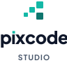
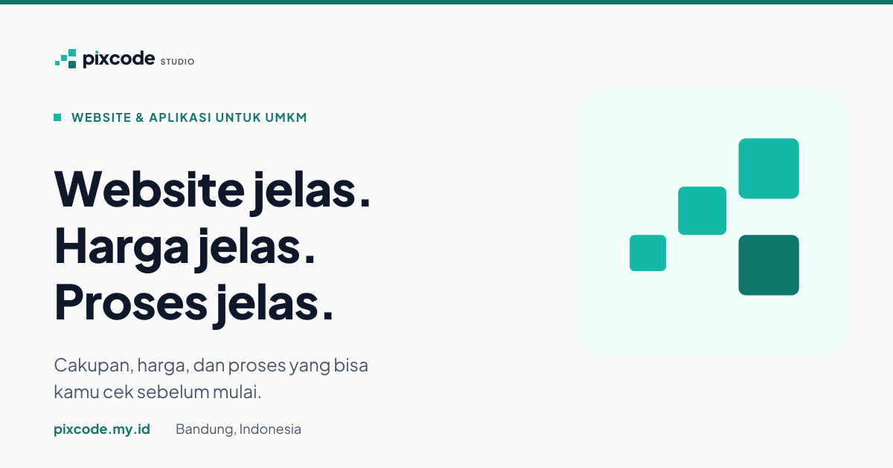

Brand guide · versi 1.0
Identitas visual untuk studio pembuatan website dan aplikasi UMKM. Tegas, minimal, dan ramah — tanpa gradient, tanpa kurung kode.
01 · Inti brand
Pixcode membantu UMKM mendapatkan website yang bisa dipahami sebelum membeli: apa yang dikerjakan, berapa harganya, dan bagaimana prosesnya. Identitas visual harus mencerminkan hal yang sama — terstruktur, terbuka, dan langsung.
01
Tipografi tebal dan warna tegas. Tidak takut mengambil ruang, tetapi tidak berteriak.
02
Sedikit elemen, banyak ruang kosong. Setiap blok punya alasan untuk ada.
03
Bahasa manusia, sudut membulat, dan nada yang membantu — bukan menggurui.
Studio web dan aplikasi untuk usaha kecil. Fokus pada cakupan yang ditulis, harga yang tidak berubah diam-diam, dan proses yang bisa dicek.
Piksel adalah modul; kode adalah struktur. Mark berupa tangga empat blok yang naik — sederhana, bisa dijelaskan, dan tidak memakai klise kurung </>.
02 · Mark
Empat blok di kanvas 32 × 32. Tiga blok mengecil ke kiri bawah, satu blok gelap menjadi jangkar di kanan bawah. Gerak naik, struktur, dan keseimbangan.
Grid 32 × 32 · jarak antar blok 2 unit · margin aman 2 unit
| Blok | Posisi | Ukuran | Warna |
|---|---|---|---|
| 1 | 20, 2 | 10 × 10 | Teal 500 |
| 2 | 10, 10 | 8 × 8 | Teal 500 |
| 3 | 2, 18 | 6 × 6 | Teal 500 |
| 4 | 20, 18 | 10 × 10 | Teal 700 |
Jangkar gelap mengunci komposisi. Jangan menukar posisi atau menyamakan ukuran blok.
Full color
Inverted
Mono
03 · Lockup
Header memakai lockup compact. Footer, OG, dan dokumen memakai lockup lengkap. Format persegi memakai stacked. Favicon memakai mark only.
Horizontal lengkap — footer, OG, dokumen
Compact — header situs (hanya “pixcode”)

Stacked — format persegi, sampul, sosial

Stacked inverted — latar gelap
Minimal 8 unit (25% tinggi mark) di setiap sisi. Tidak ada teks, garis, atau tepi gambar yang boleh masuk area ini.
| Horizontal lengkap | 160 px lebar |
| Horizontal compact | 120 px lebar |
| Stacked | 96 px lebar |
| Mark only | 20 px |
| Favicon | 16 px (mark disederhanakan) |
04 · Warna
Putih dan off-white mendominasi. Ink menjaga keterbacaan. Teal dipakai untuk aksi dan penanda. Hijau WhatsApp hanya untuk tombol WhatsApp.
| Ink di atas Paper | 17.85:1 |
| Slate 600 di atas Paper | 7.58:1 |
| Teal 700 di atas Paper | 5.47:1 |
| Putih di atas Teal 700 | 5.47:1 |
| Ink di atas WhatsApp | 9.00:1 |
Teal 500 untuk teks kecil di atas putih (2.49:1). Putih di atas WhatsApp (1.98:1). Gradient. Warna aksen di luar palet. Hijau WhatsApp untuk hal selain tombol WhatsApp.
05 · Tipografi
Plus Jakarta Sans untuk semua teks situs. ExtraBold untuk headline dan wordmark, Bold untuk label, Regular/Medium untuk body. Tidak ada font dekoratif kedua.
Display · ExtraBold 800
Heading · Bold 700
Body text memakai Plus Jakarta Sans Regular atau Medium. Kalimat aktif, angka konkret, dan istilah teknis yang diterjemahkan. Panjang baris ideal 60–75 karakter.
| Display | 40–72 px · tracking -0.04em |
| H1 / H2 | 24–40 px · tracking -0.03em |
| Body | 16–18 px · line-height 1.6–1.75 |
| Label | 12–13 px · uppercase · tracking 0.08–0.14em |
| Tombol | 14–16 px · weight 600–700 |
Wordmark adalah Plus Jakarta Sans ExtraBold yang sudah dikonversi menjadi path, tracking -20/1000, dengan huruf “i” tanpa titik yang diganti kotak teal. “STUDIO” memakai Bold dengan tracking lebar.
Jangan mengetik ulang logo memakai font biasa. Selalu pakai file SVG di public/brand/.
06 · Elemen & aplikasi
Satu blok atau cluster empat blok cukup untuk mengingatkan ke mark. Gunakan hemat di penanda section, bullet, sudut gambar, dan watermark. Jangan menumpuk pola piksel di belakang teks.
Satu blok 8–12 px atau cluster empat blok. Maksimal satu motif per section.
Garis, stroke 1.5–2 px, ujung membulat. Ikon WhatsApp hanya di konteks WhatsApp.
Pemisah 1 px Slate 200. Bukan grid penuh di belakang teks.
Asli, cahaya natural, crop konsisten. Tanpa stok generik. Alt text deskriptif.
Compact, tinggi 32 px, latar putih.
Lengkap, tinggi 40 px, di atas Off-white.

1200 × 630, lockup compact + headline.
07 · Suara & tata kelola
Suara brand sama dengan visualnya: langsung, konkret, dan membantu. Panggil pemilik usaha dengan “kamu”. Sebut apa yang didapat, berapa lama, dan apa batasnya.
Perubahan logo dimulai dari src/data/brand.ts dan file di public/brand/. Jangan mengedit inline di banyak komponen. Setelah mengubah aset, perbarui favicon, apple touch icon, OG image, dan panduan ini. Jalankan npm run check dan npm run build.
| Logo | public/brand/ |
| Mark & wordmark | src/data/brand.ts |
| Favicon | public/favicon.svg |
| OG | public/og-image.png |
| Panduan | docs/BRAND-GUIDE.md |
Pixcode Studio
Bandung, Indonesia · pixcode.my.id